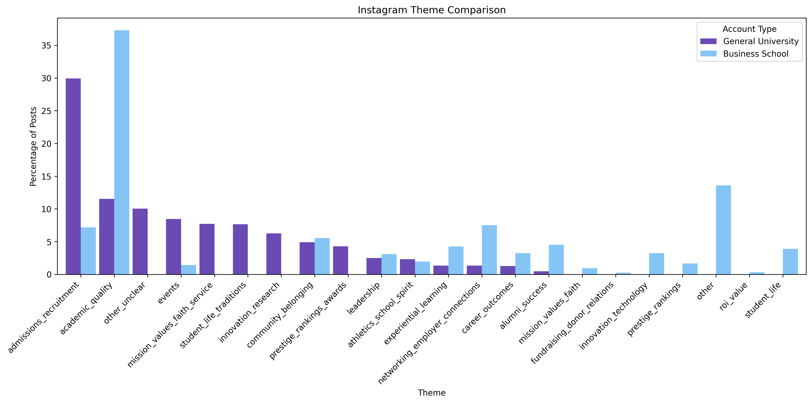
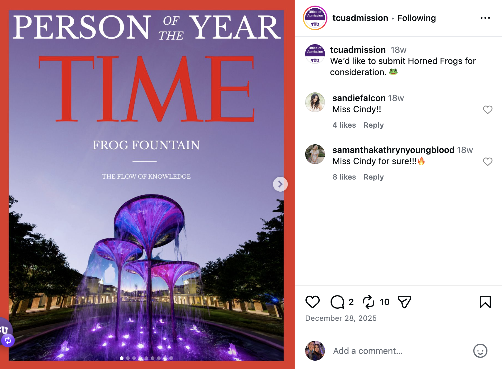
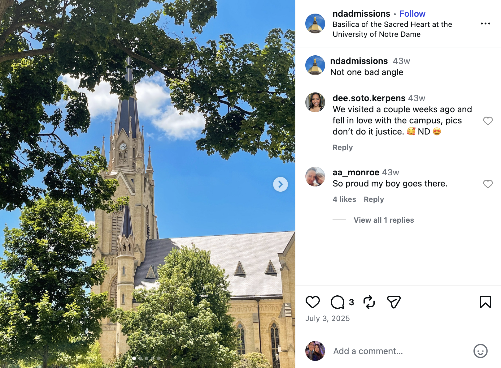
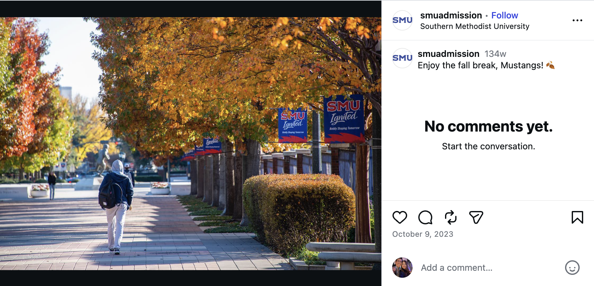
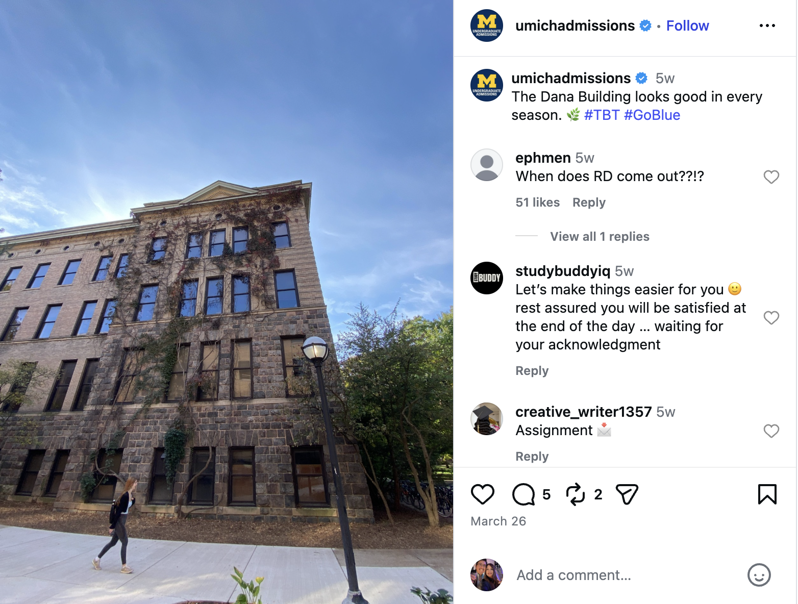

Platform Analysis
Instagram
This page compares general university Instagram accounts with business school Instagram
accounts. The charts show which themes appeared most often and how those themes differed
across the two account types.
General University Instagram
General university accounts included posts about campus life, school spirit,
student experience, community, events, and broader school identity.
Business School Instagram
Business school accounts included posts about careers, alumni success, admissions,
networking, leadership, academics, and hands-on learning.
Instagram Theme Comparison
This chart compares the themes that appeared most often in general university Instagram
posts and business school Instagram posts.

Top themes at a glance
This section highlights the most common themes from the Instagram comparison chart.
The larger words appeared more often in each account type.
General University Instagram
Admissions
30.0%
Academics
11.4%
Other
10.1%
Events
8.6%
Faith and service
7.8%
Business School Instagram
Academic quality
37.4%
Other
13.6%
Employer connections
7.6%
Community belonging
5.6%
Alumni success
4.6%
What was inside the “other” category?
The general Instagram data included several posts that were originally grouped into an
“other” category. I reviewed those posts again and separated them into smaller categories
to show what kinds of content were included.
Very small categories were grouped together so the chart would be easier to read.
.png)
Examples from the “other” category
These screenshots show a few examples of posts that were part of the general Instagram
“other” category. The examples come from different schools and represent several of the
smaller categories shown in the chart.

School spirit
This example represents posts connected to school pride, identity, colors, mascots,
or traditions.

Campus scenery
This example represents posts focused on campus visuals, scenery, or the physical
environment of the school.

Seasonal or holiday
This example represents posts connected to holidays, seasons, breaks, or moments in
the school year.

Campus events and traditions
This example represents posts connected to campus moments, traditions, celebrations,
or shared student experiences.
What the Instagram data shows
The Instagram data shows differences between general university accounts and business
school accounts. General university accounts included more posts connected to school
identity, campus life, and belonging. Business school accounts included more posts
connected to academics, careers, alumni, admissions, and professional opportunity.
The “other” category added more detail to the Instagram review because it included
posts that were visual, seasonal, tradition-based, or personality-driven.